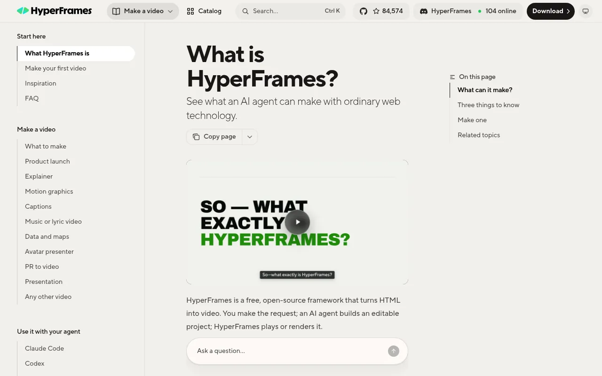
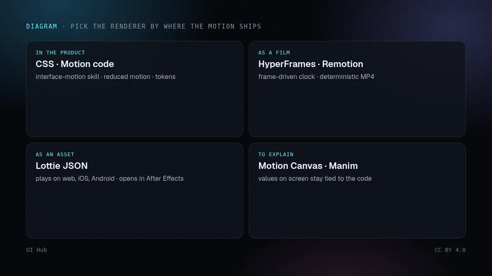
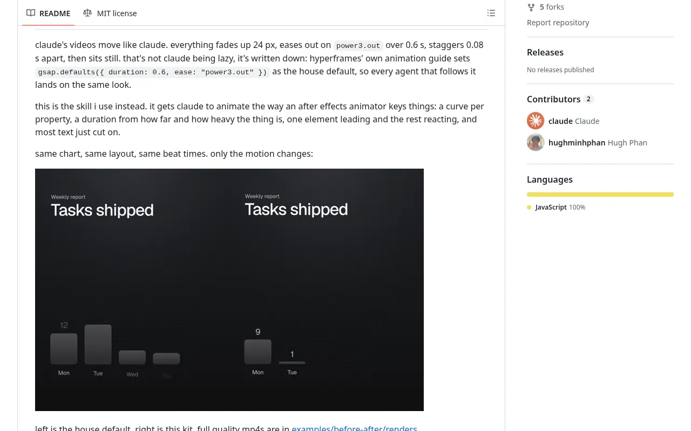

2026 年 11 月 14 日到 15 日，X 上被收藏最多的设计帖不是哪个新模型发布，而是一份清单：18 个可以交给 Claude Code 或 Codex 做动画的免费 GitHub 项目，从 Remotion 的智能体技能、Motion Canvas，到 Lottie、Manim、three.js、Blender 和 Godot。它一天内收藏数超过 5800，AI Design Daily 11 月 15 日这一期也把它列为本期收藏最多的帖子。这些工具都不新，新的是把它们当作智能体可以随手拿起的零件，以及相关技能冒出来的速度：截至 11 月 12 日，motif 的目录已收录 146 个动效技能仓库、901 个技能文件。

2026 年 11 月 15 日 HyperFrames 文档的「What is HyperFrames?」页面：一个把 HTML 变成视频的开源框架，并附有在 Claude Code 和 Codex 中使用的指南 · 截图：HyperFrames docs (HeyGen)（hyperframes.heygen.com），2026-11-15 截取，版权归原站所有
清单一长，人就容易问错问题：「哪个最好？」。对做界面的人来说，有用的问题是：动效做完之后住在哪里？在产品里、在视频里，还是在一个别人会播放的文件里？这决定了用什么工具、怎么评审、受什么许可证约束。本文把主要选项对应到这些目的地，并列出在让智能体替我们做动画之前，我们会先检查的几个坑。
工具箱里有什么
- HTML 转视频：HyperFrames。HeyGen 推出的 Apache-2.0 框架，把 HTML、CSS、媒体和可定位（seekable）的动画渲染成确定性的 MP4。它带 9 个智能体技能、一个约 450 个可编辑区块的组件库（标题、字幕、图表、转场），以及能检查、预览和渲染的命令行工具。其中 reverse-any-video 和 style-sampling 两个技能需要付费的 Pro 方案。
- React 转视频：Remotion。每个合成都是 React 组件，所有属性都由当前帧计算出来。Remotion 官方维护 13 个技能，用
npx remotion skills add 安装，覆盖创建、预览、渲染、字幕和地图。
- 到处都能播的矢量文件：Lottie。Diffusion Studio 的 text-to-lottie 技能（MIT 许可）让智能体写 Lottie JSON，并在自带播放器里实时预览。成品能在网页、iOS、Android、React Native 和 Flutter 上播放，也能导入 After Effects 让人再打磨。
- 图解和讲解：Motion Canvas 与 Manim。以代码为主的动画图表和数学讲解工具；现在已有不少技能会先规划分镜、渲染低清预览、逐帧检查，再做最终渲染。
- 界面动效：要的是技能，不是渲染器。Emil Kowalski 的技能（MIT 许可，包括 animate、choreograph、review-animations、remove-animations、animation-performance）负责编写和审查会发布到你应用里的 CSS 或 Motion 代码。这是产品动效，不是视频。

四个目的地的对照网格：发到产品里用 CSS 或 Motion 代码配界面动效技能；发成影片用 HyperFrames 或 Remotion 逐帧渲染成 MP4；发成应用内素材用可在 After Effects 打开的 Lottie JSON；讲解数据或数学用 Motion Canvas 或 Manim · 示意图：UI Hub 原创，CC BY 4.0
我们的看法：先按目的地选，再查时钟
大多数对比按「能画什么」给这些工具排序。实际上它们重叠很多；HyperFrames、Remotion 和 Motion Canvas 都能做动态标题。真正区分它们的，是交回来的东西是什么，以及下一个由谁来改。
- 发到产品里（进场、退场、悬停、布局变化、加载）：用应用自己的 CSS 或 Motion 代码，配一个界面动效技能。能用真实界面的地方，绝不放一段界面录屏视频；视频不会响应输入、主题和字号。
- 发成影片（发布视频、更新日志短片、讲解片）：用确定性渲染器。团队习惯 HTML 和 GSAP，选 HyperFrames；团队习惯 React、想让合成和组件放在一起，选 Remotion。
- 发成应用里的素材（空状态、成功对勾、引导插画）：要 Lottie，这样动效设计师能在 After Effects 里打开，工程师能原生播放。
- 用来讲清一件事（数据变化、算法、公式）：用 Motion Canvas 或 Manim，屏幕上的数值始终和代码绑定。
然后查时钟。影片渲染器一次截一帧，所以每个动作都必须由帧号算出来。Remotion 文档提醒：不是由 useCurrentFrame() 驱动的动画（比如 CSS 过渡）在渲染时可能闪烁。而主要在网页界面上训练出来的智能体，最爱用的恰恰是这种过渡。在视频项目里，按真实时间走的动画就是 bug，哪怕预览看起来没问题。
我们会先检查的三个坑
- 许可证的差别比 README 徽章显示的大。HyperFrames 是 Apache-2.0。Remotion 是源码可见（source-available）：个人、非营利组织和员工不超过 3 人的营利公司可免费使用，更大的公司需要购买公司许可，所有基于 Remotion 的技能都继承这条规则。目录里有些项目根本没有许可证文件，还有几个打包了 GSAP，而 GSAP 用的是它自己的标准许可，不是开源许可。接客户项目之前就查，别等之后。
- 技能就是带权限的代码。motif 的目录和 HyperFrames 社区技能的 README 都提醒：一个技能可以让智能体执行命令、读取文件，或在付费 API 上花钱。先读 SKILL.md 和附带脚本，只装这次任务需要的技能；任务用不到的付费密钥，不要放进环境变量。
- 每部智能体影片都动得一样。motion-kit 项目指出，HyperFrames 自己的动画指南把
power3.out、0.6 秒设为默认值，于是照着做的智能体会让所有元素用同一条曲线、均匀错开地淡入上浮。它的解法和好的界面动效原则一致：时长由距离和重量决定，一个元素领头、其余以不均匀的间隔做出反应，很多文字直接切入。如果你的产品已有动效 Token，就把这些数字交给智能体，别让框架默认值变成你的品牌。
我们会从哪里开始
对设计团队来说，成本最低的第一步是一段 15 秒的更新日志短片：用产品真实的组件和 Token 搭建，由 HyperFrames 或 Remotion 渲染，正式渲染前先看一张关键帧联系表。第二步是把一个手做的 Lottie 换成智能体初稿，再由动效设计师在 After Effects 里完成。两者都让人负责品味、智能体负责关键帧。界面动效是要求最严的地方：一个技能写，一个技能审，每次都检查减少动效设置。

2026 年 11 月 15 日 GitHub 上的 motion-kit 仓库，README 对比了框架默认动效与「每个动作一条曲线、按距离定时长、不均匀反应」的做法 · 截图：GitHub · hughminhphan（github.com），2026-11-15 截取，版权归原站所有清单：给智能体布置动效任务
- 写明目的地。应用内代码、MP4、Lottie JSON 还是讲解片。一次只要一种。
- 写明渲染器和许可证。确认你的公司符合任何源码可见工具的免费条件，并记下自带独立条款的打包库。
- 给出时钟规则。影片：一切由帧号计算，不用 CSS 过渡或计时器。应用：只动 transform 和 opacity，不引发布局抖动。
- 交出动效 Token。设计系统里的时长、曲线和弹簧；没有的话，要求按距离和尺寸推算时长，而不是一个全局默认值。
- 规定格式。帧率、总帧数或秒数、画幅（16:9 和 9:16）、安全区，需要时用透明背景。
- 要一个评审产物。正式渲染前，先给关键帧联系表或低清预览。
- 产品内动效要无障碍。遵守
prefers-reduced-motion，超过 5 秒的循环动画要有暂停控件（WCAG 2.2.2）。
- 审计已装的技能。读每个 SKILL.md 和脚本；不再用的技能就删掉。
# 把这段贴给你的编程智能体
为 <功能> 做一段 15 秒的 <更新日志 / 发布> 短片。
- 目的地：MP4，1920x1080 和 1080x1920，30 fps。渲染器：。
- 许可证：先确认我们符合该渲染器的许可条件；开工前列出所有
自带独立条款的打包库（例如 GSAP）。
- 用 <路径> 里我们真实的组件和 Token 搭场景，不用素材库界面。
- 时钟：每个动画值都由帧号算出。不用 CSS 过渡、setTimeout
或 requestAnimationFrame。
- 动效：使用我们的 Token <时长 / 缓动 / 弹簧>。没有的话，按距离和尺寸
推算时长；一个元素领头，其余以不均匀的间隔反应；多数文字直接切入。
不要给所有动作套同一个全局缓动。
- 正式渲染前，先给我一张 12 个关键帧的联系表，然后等我确认。
输出：渲染器和版本、许可证检查结果、用到的技能，以及你无法核实的内容。
UI Hub 相关阅读：让动效感觉对、Figma Motion 弹簧的交接，以及2026 年最好的 React 动画组件库。